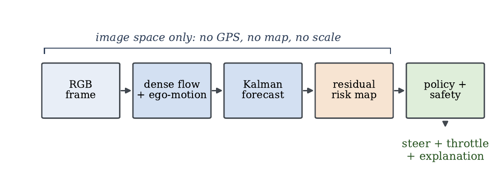
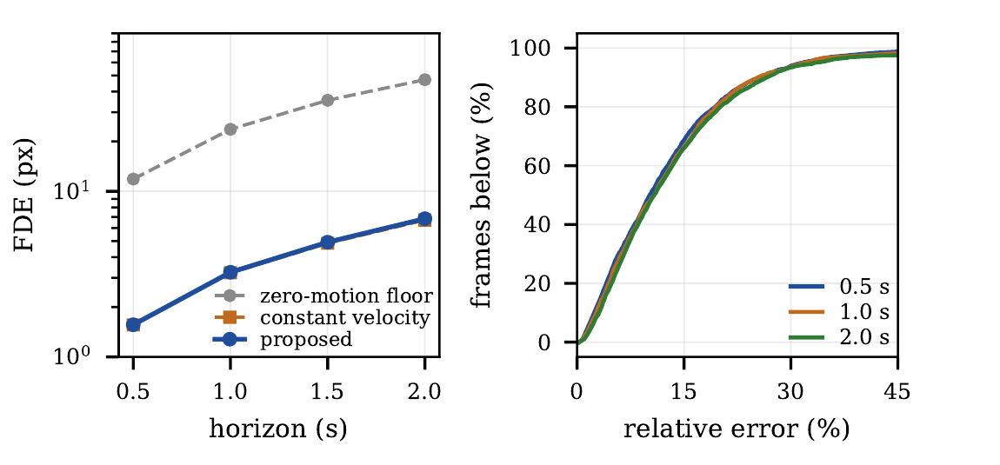
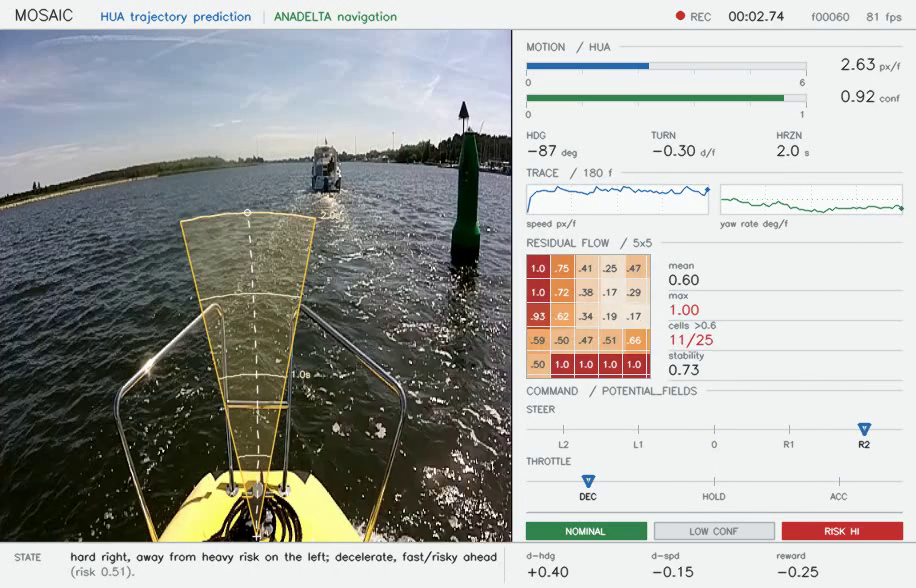

Mosaic
Real-Time Interpretable Monocular Motion Forecasting and Reactive Navigation for Autonomous Surface Vehicles
1 Architecture
A complete, real-time (70 FPS), GPS-free monocular pipeline: a forward-facing camera feeds dense optical flow and ego-motion estimation, which drives a Kalman-filtered short-horizon forecast, a residual-flow risk map, and finally a policy-and-safety layer that issues steering, throttle and a plain-language explanation — every stage in image space only, with no GPS, map, depth sensor or absolute scale.

2 Examples
Evaluated on real ASV footage against explicit bracketing baselines (zero-motion floor, constant velocity, hindsight oracle) rather than self-consistency alone. The forecast cuts endpoint error by 86% relative to the zero-motion floor and stays within 12.6–13.7% relative error across horizons.


3 Video
A short walkthrough of the system running on real footage.